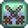
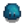

Kampf
Kampf ist die Fähigkeit, die mit dem Bekämpfen von Monstern in den Minen, der Schädelhöhle oder auf dem Wildnis-Hof in Verbindung gebracht wird.
Während der ersten paar Tage in Stardew Valley sind die Minen wegen eines Unfalls verursacht durch die Joja Gesellschaft geschlossen. Ungefähr fünf Tage später erhält der Spieler einen Brief von der Joja GmbH, in dem sie erklären, dass der Erdrutsch, der die Minen blockiert hat, geräumt wurde und dass der Eingang zu den Minen wieder geöffnet ist. Ab diesem Punkt ist die Fähigkeit Kampf für die Spieler verfügbar, die nicht den Wildnis-Hof gewählt haben.
Kampf wird durch das Töten von Monstern erhöht. Jede Steigerung in der Kampfstufe gibt +5 Gesundheit und ein oder mehr Herstellungs- oder Kochrezepte. (Wählt man den Kämpfer-Beruf ab Level 5, gibt diese +15 Gesundheit anstatt wie normal +5 Gesundheit, während es bei Kundschafter, Akrobat, Desperado oder Grobian keine Gesundheit gibt.)
 Kampffähigkeit
| Stufe 1 | Stufe 2 | Stufe 3 | Stufe 4 | Stufe 5 | |
|---|---|---|---|---|---|
| Herstellungsrezept: | Herstellungsrezept: | Kochrezepts: | Herstellungsrezept: | Wähle einen Beruf: | |
|
| ||||
| Stufe 6 | Stufe 7 | Stufe 8 | Stufe 9 | Stufe 10 | |
| Herstellungsrezept: | Herstellungsrezept: | Herstellungsrezept: | Herstellungsrezept: | Kämpfer: | Kundschafter: |
|
| ||||
|
| ||||
Indem man den Kundschafter-Beruf wählt, erhöht sich die Chance auf Kritische Treffer mit der folgenden Formel: kritChance += kritChance * 0.5. Tatsächlich werden alle Bonis für kritische Treffer multipliziert, nicht addiert. Selbst mit allen möglichen Bonis liegt der Wert nur bei etwa 5-10%, sodass es selbst mit dem Desperado-Beruf schwierig sein wird, die niedrige Schadenserhöhung der Kämpfer zu rechtfertigen.
(Geprüfte kritische Treferchance mit der Scout-Fähigkeit und zwei Ringen mit +10% Kritchance. Die Trefferchance ist multiplikativ und nicht additiv: je nach Waffe ca. 5-10% [Basis * 1-5*1.1*1.1] mit allen Boosts, nicht 50% + 10% + 10% = 70%).
Die maximale kritische Trefferchance beträgt 10.89%, welche mit einem Gemeinen Kris, zwei Topas Ringen und der Kundschafter-Fähigkeit erreicht werden kann.
Die Desperado-Fähigkeit erhöht den Schaden von kritischen Treffern von ungefähr 3x auf ungefährt 21x. Mit der erforderlichen Kundschafter-Fähigkeit tritt der kritische Schaden des Spielers zu ungefähr 2% der Zeit auf, was auf lange Sicht zu einem zusätzlichen Schaden von 42% führt. Das ist jedoch nicht ganz korrekt, da ein kritischer Treffer selten bei einem Monster mit vollem Leben auftritt, ist der gemessene Schaden geringer, als der tatsächliche.
Erfahrungspunkte
In der folgenden Tabelle sind die Erfahrungspunkte aufgelistet, die man für das Töten eines bestimmten Monsters bekommt. (Diese Information findet man unter Data\Monsters.de-DE.xnb).
| Monster | Erfahrung |
|---|---|
| 3 | |
|  Frost-Schleim | 6 |
| 10 | |
| 7 | |
| 3 | |
| 7 | |
| 15 | |
| 22 | |
| 5 | |
| 5 | |
| 2 | |
| 15 | |
| 15 | |
| 15 | |
| 15 | |
| 8 | |
| 2 | |
| 10 | |
| 10 | |
| 4 | |
| 12 | |
| 20 | |
| 6 | |
| 1 | |
| 20 | |
| 20 | |
| 7 | |
| 15 |
Status Verbesserungen
Das Essen von bestimmter Nahrung, Tragen von Schuhen, Ringen und bestimmter Waffen, verbessert die Werte im Kampf.
 Angriff bestimmt wie viel Schaden der Spieler mit der Waffen pro Schlag anrichtet.
Angriff bestimmt wie viel Schaden der Spieler mit der Waffen pro Schlag anrichtet.
 Kritische Kraft verstärkt den Schaden bei einem kritischen Treffer.
Kritische Kraft verstärkt den Schaden bei einem kritischen Treffer.
 Verteidigung bestimmt den Schaden den der Spieler pro Treffer erhält.
Verteidigung bestimmt den Schaden den der Spieler pro Treffer erhält.
 Immunität beeinflusst die Fähigkeit des Spielers sich zu erholen, nachdem er von einem Gegner getroffen wurde.
Immunität beeinflusst die Fähigkeit des Spielers sich zu erholen, nachdem er von einem Gegner getroffen wurde.
Das  Gewicht einer Waffe bestimmt wie stark ein Gegner zurückgestoßen wird, wenn der Spieler zuschlägt.
Gewicht einer Waffe bestimmt wie stark ein Gegner zurückgestoßen wird, wenn der Spieler zuschlägt.
Die  Geschwindigkeit einer Waffe und die
Geschwindigkeit einer Waffe und die  Spielergeschwindigkeit sind ein wichtiger Faktor für einen erfolgreichen Kampf.
Spielergeschwindigkeit sind ein wichtiger Faktor für einen erfolgreichen Kampf.
| Fähigkeiten & Werte | |
|---|---|
| Fähigkeiten | Hofarbeit • Minenarbeit • Sammeln • Fischen • Kampf |
| Werte | Angriff • Geschwindigkeit • Gewicht • Glück • Immunität • Kritische Chance • Kritische Kraft • Magnetismus • Verteidigung |